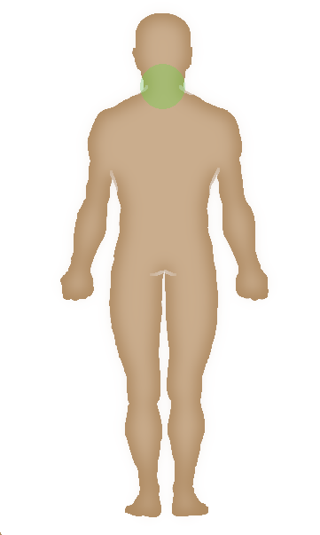
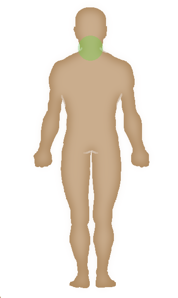

Selecciona dónde te duele
¿Aquí te duele?


 



Área afectada
Cabeza
Rostro
Cuello
Tórax derecho
Tórax izquierdo
Brazo izquierdo
Brazo Derecho
Antebrazo izquierdo
Antebrazo Derecho
Mano izquierda
Mano Derecha
Abdómen superior izquierdo
Abdómen superior derecho
Abdómen inferior izquierdo
Abdómen inferior derecho
Cadera
Genitales
Muslo derecho
Muslo izquierdo
Rodilla derecha
Rodilla izquierda
Canilla derecha
Canilla izquierda
Pie derecho
Pie izquierdo
Cabeza posterior
Nuca
Escápula izquierda
Escápula derecha
Zona lumbar
Glúteo derecho
Glúteo izquierdo